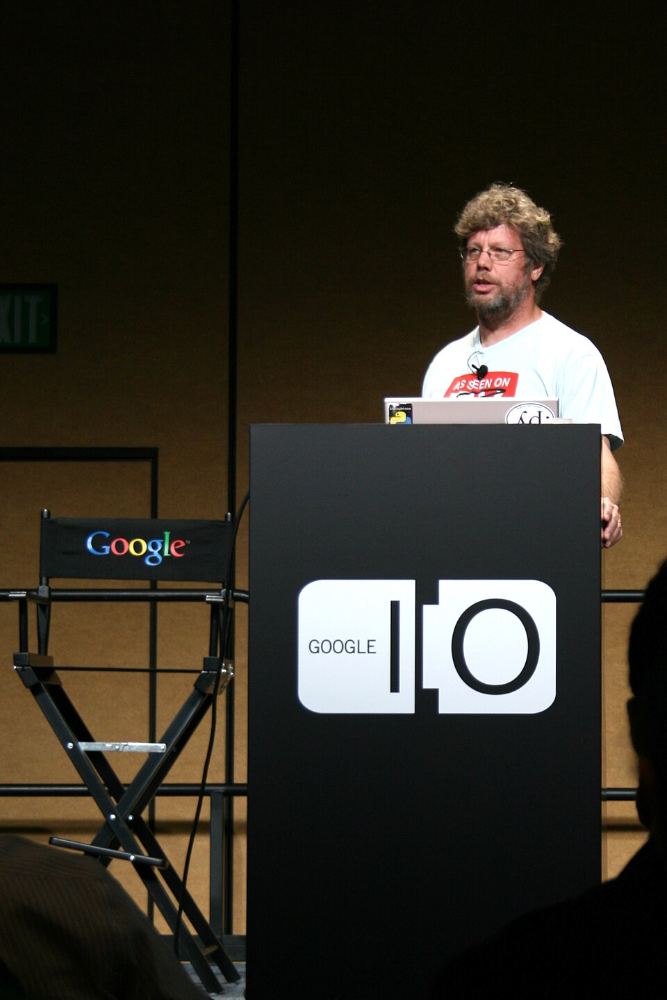

Módulo 00 — Introducción a Python
¿Qué es Python?

Python es un lenguaje de programación interpretado, multiparadigma y de tipado dinámico creado por Guido van Rossum en 1991. Su filosofía prioriza la legibilidad: el código Python se parece a pseudocódigo bien escrito.
Características clave
| Característica | Significado |
|---|---|
| Interpretado | No compilás a binario — un intérprete ejecuta el código línea por línea |
| Tipado dinámico | Las variables no declaran tipo; el tipo se infiere en runtime |
| Tipado fuerte | No mezcla tipos arbitrariamente: "3" + 1 es error, no "31" |
| Multiparadigma | Soporta procedural, orientado a objetos y funcional |
| Batteries included | Biblioteca estándar enorme (red, archivos, criptografía, etc.) |
| Indentación obligatoria | Los bloques se definen por sangría, no por {} |
¿Para qué se usa?
- Ciencia de datos y ML: pandas, numpy, scikit-learn, PyTorch
- Web backend: Django, Flask, FastAPI
- Automatización y scripting: tareas DevOps, parsing de archivos
- Educación: el lenguaje #1 enseñado en universidades
- Finanzas y trading: bots algorítmicos, análisis cuantitativo
Instalación
Windows
- Descargar instalador de python.org
- MARCAR "Add Python to PATH" durante la instalación
- Verificar:
python --version
macOS
brew install python@3.12Linux (Debian/Ubuntu)
sudo apt update
sudo apt install python3 python3-pip python3-venvPrimer programa
Crear hola.py:
print("Hola, mundo")Ejecutar:
python hola.pyEl intérprete interactivo (REPL)
$ python
>>> 2 + 2
4
>>> "hola".upper()
'HOLA'
>>> exit()Editor recomendado
VS Code con la extensión oficial de Python:
- Resaltado de sintaxis
- Autocompletado
- Linter (Pylint o Ruff)
- Debugger integrado
El Zen de Python
import thisImprime los 19 principios de diseño del lenguaje. Vale la pena leerlos cada cierto tiempo.
Versiones
- Python 2.x — discontinuado en 2020. No usar.
- Python 3.12+ — mínimo recomendado hoy
- Python 3.14 — última estable (verificado: septiembre 2026)
Errores típicos al arrancar
# ❌ la consola no encuentra el intérprete
C:\> python --version
'python' no se reconoce como un comando interno o externo
# ✅ reinstalá marcando "Add Python to PATH", o usá el launcher py
C:\> py --version
Python 3.12.4>>> del REPL a un archivo — los tutoriales muestran el prompt del intérprete, pero ese prompt no es parte del código.
# ❌ hola.py con el prompt pegado
>>> print("Hola")
# SyntaxError: invalid syntax
# ✅ en un archivo va solo el código
print("Hola")print es una función y los paréntesis no son opcionales.
print "Hola" # ❌ SyntaxError (esto era Python 2)
print("Hola") # ✅ Python 3random.py, math.py o email.py, Python va a importar tu archivo en lugar del módulo real y vas a ver errores incomprensibles del tipo AttributeError: module 'random' has no attribute 'randint'. Renombralo a mi_random.py y borrá la carpeta __pycache__ que quedó al lado.
Checkpoint — ¿lo tenés claro?
Python es de tipado dinámico y a la vez de tipado fuerte. ¿No es una contradicción?
No, son dos ejes distintos. Dinámico responde cuándo se conoce el tipo: no lo declarás, se resuelve mientras el programa corre. Fuerte responde cuánto se respeta ese tipo una vez que existe: Python no mezcla tipos por su cuenta, por eso "3" + 1 explota en vez de inventar "31" como haría JavaScript. Dinámico = flexible al asignar; fuerte = estricto al operar.
¿Cuándo conviene el REPL y cuándo un archivo .py?
El REPL es memoria de corto plazo: probás una idea, ves el resultado al instante y al cerrarlo no queda nada. Sirve para hacerle preguntas al lenguaje ("¿qué devuelve esto?"). El archivo .py es lo que podés volver a ejecutar, versionar en git y compartir con otro. Regla práctica: explorás en el REPL, y lo que funciona lo pasás al archivo.
¿Por qué el mismo .py corre en Windows, macOS y Linux sin recompilar nada?
Porque no distribuís un binario: distribuís texto. Lo que cambia en cada sistema operativo es el intérprete, que ya viene compilado para esa plataforma; tu archivo es idéntico en las tres. La contracara es que en cada máquina donde quieras correrlo tiene que haber un Python instalado, y de una versión compatible — un ejecutable compilado no lo necesita, pero a cambio solo sirve para el sistema para el que se compiló.
Ejercicios
- Instalar Python 3.12+ y verificar la versión
- Ejecutar el REPL y calcular
(15 * 23) - 47 - Escribir un script
saludo.pyque imprima tu nombre y edad - Leer la salida de
import thisy elegir tu principio favorito
🧠 Autoevaluación rápida
Respondé sin mirar arriba. Cada pregunta te explica el porqué.
1. ¿Qué hace print("Hola")?
print() envía texto a la salida estándar (la consola). Es lo primero que se aprende.2. ¿Qué extensión tiene un archivo de Python?
.py.3. Python es un lenguaje…